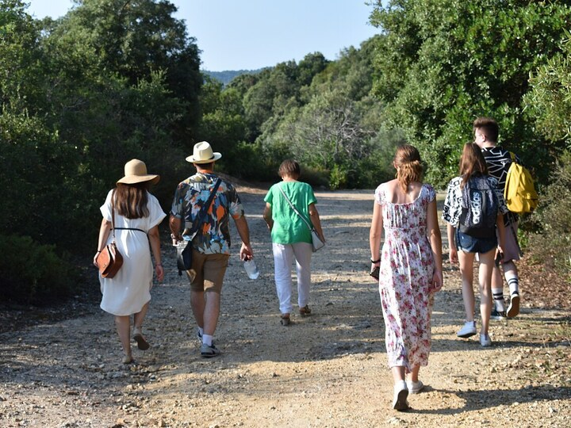

Multi-model · FaceDetector → FaceNet
FaceNet expects a tight, centred face crop. Real photos aren't cropped. So chain two on-device models: MediaPipe's FaceDetector (BlazeFace) boxes the face first, we crop to it, and only then does FaceNet embed — far more robust than feeding a whole scene. Two models, one pipeline, nothing uploaded.

–
Both models run on-device (BlazeFace ~230 KB + FaceNet ~91 MB). The detector aligns the crop so FaceNet sees a consistent face; without it, background and framing pollute the embedding. Nothing is uploaded.
Detection and embedding solve different problems: BlazeFace answers "where is the face?", FaceNet answers "whose face pattern is this?". Feeding FaceNet a raw scene mixes in background and scale; cropping to the detector's box first makes the similarity comparison stable across photos where the face sits in a different place or size. This detect-then-embed shape underlies most real face pipelines.